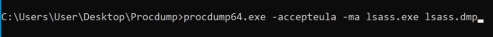
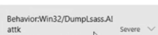

Alternativas a Mimikatz
.
El proceso de encargado de gestionar el log de los usuarios, administra contraseñas, etc se trata del proceso SASS.
Vamos a intentar hacer un Dump de la memoria que tiene el proceso.
https://learn.microsoft.com/en-us/sysinternals/downloads/procdump


Esto solo lo detectan algunas versiones de windows defender pero otras soluciones no suelen detectarlo.